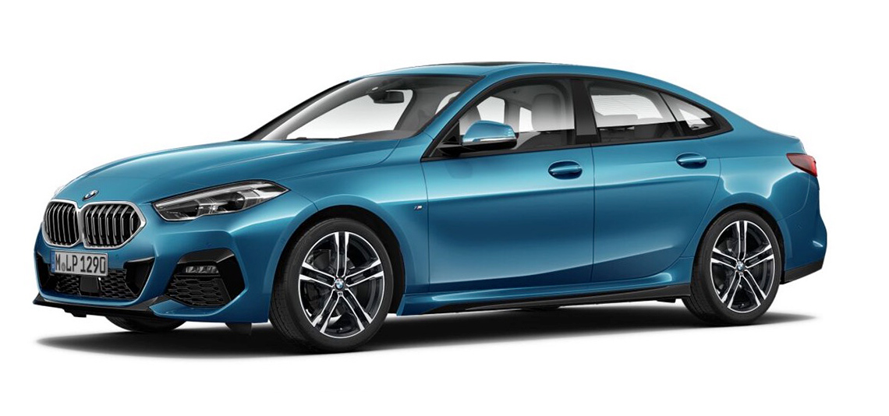
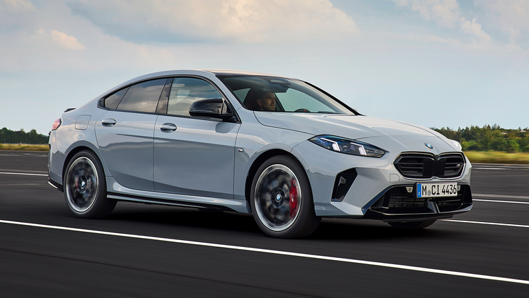

BMW
BMW 2 Series Gran Coupé
جميع نسخ BMW 2 Series Gran Coupé مع المواصفات الرسمية مرتبة في صفحة واحدة لتسهيل المقارنة بين جميع الإصدارات.
جميع نسخ BMW 2 Series Gran Coupé مع المواصفات الرسمية مرتبة في صفحة واحدة لتسهيل المقارنة بين جميع الإصدارات.

| المحرك | 1.5 لتر تيربو |
| عدد الأسطوانات | 3 |
| القوة | 156 حصان |
| عزم الدوران | 230 نيوتن متر |
| ناقل الحركة | 7 سرعات Steptronic |
| نظام الدفع | أمامي |
| التسارع (0-100) | 8.6 ثانية |
| السرعة القصوى | 230 كم/س |
| عدد المقاعد | 5 |
| نوع الوقود | بنزين |

| المحرك | 2.0 لتر تيربو |
| عدد الأسطوانات | 4 |
| القوة | 170 حصان |
| عزم الدوران | 280 نيوتن متر |
| ناقل الحركة | 7 سرعات Steptronic |
| نظام الدفع | أمامي |
| التسارع (0-100) | 7.9 ثانية |
| السرعة القصوى | 238 كم/س |
| عدد المقاعد | 5 |
| نوع الوقود | بنزين |

| المحرك | 2.0 لتر تيربو |
| عدد الأسطوانات | 4 |
| القوة | 317 حصان |
| عزم الدوران | 400 نيوتن متر |
| ناقل الحركة | 7 سرعات Steptronic |
| نظام الدفع | xDrive رباعي |
| التسارع (0-100) | 4.9 ثانية |
| السرعة القصوى | 250 كم/س |
| عدد المقاعد | 5 |
| نوع الوقود | بنزين |